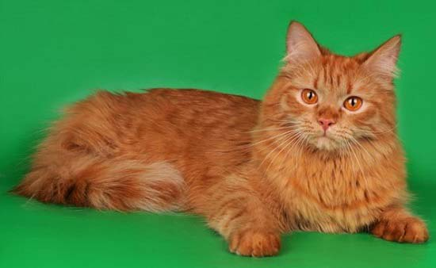

Сибирячка появилась и развивалась на территории Приуралья и в Сибири. Шерсть сибирской кошки не пропускает влагу и не намокает. Она легко переносит морозы и при этом долго остается котенком. Взрослеют сибиряки и сибирячки только годам к пяти. Многие любят эту породу за то, что она чуть ли не единственная среди полудлинношерстных, которая считается гипоаллергенной.